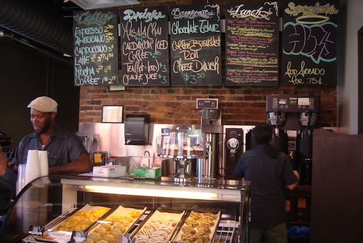

WILD THINGS COFFEE SHOP
Wild Things Coffee Shop is the coziest corner in the zoo. Whether you need your morning coffee, a fresh croissant, or a light sandwich, we have it all. We serve the best cappuccinos, lattes and iced coffees, plus a selection of teas and hot chocolate for kids.
It is a small, friendly shop with rustic decor and comfortable seating both inside and outside. You can take your coffee to go and continue your zoo adventure, or sit and relax while the kids play in the nearby play area. We also have muffins, cakes and healthy snacks.
It is run by our friendly staff who love to chat about the zoo and give you tips on which animals to see next. A perfect stop to recharge.
WHERE WILL YOU FIND IT
Wild Things Coffee Shop is right at the main entrance, next to the panda enclosure.